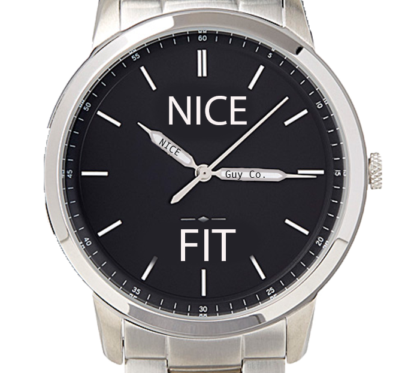

Jimmy's Story
One day Jimmy Torres was going to church when he realized he accidentally got ready for work instead of being ready to praise the Lord.
With this given problem he sought out to find an easier way to change into clothes for different situations.
Jimmy thought to himself “I hate having to take so much time to change”.
He had to go to school, West-Mec, then work and all of that combined was very time consuming.
It took trial and error for Jimmy to conceive the idea of creating a watch that can change outfits at an instant.
Then came forth the creation of Nice fit;
a portable wardrobe that is easy to access and use.
